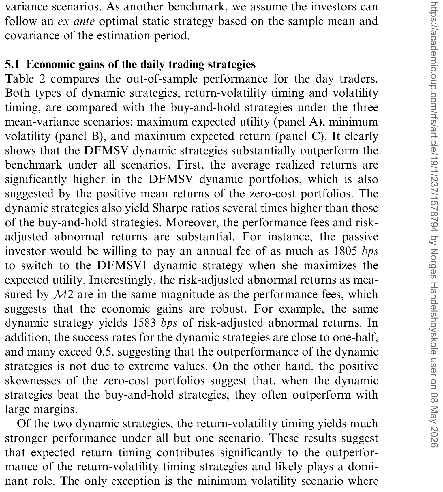
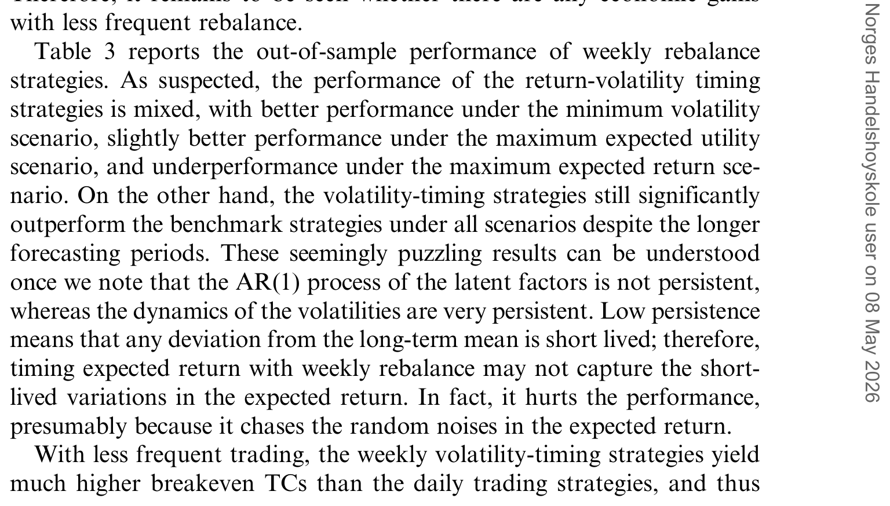
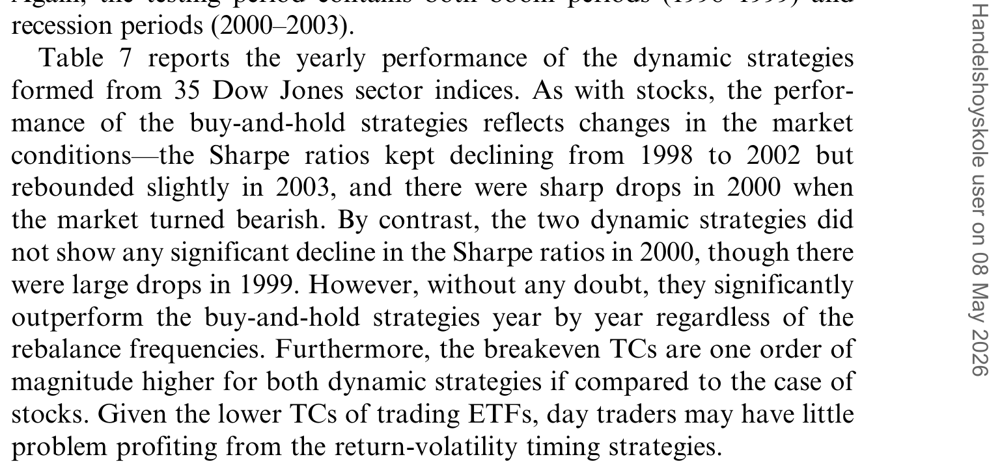
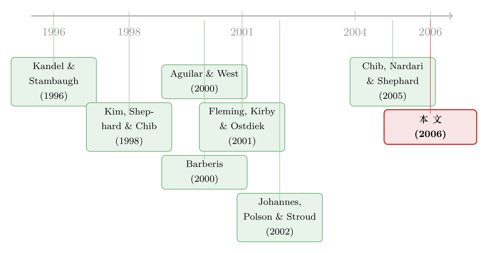

三百多个参数，赌一把「波动」到底值多少钱
本文读的是 Han (2006, Review of Financial Studies)：作者提出一个能让 36 只股票的预期收益和协方差同时随时间变动的高维动态因子随机波动率（DFMSV）模型，再用它去做均值-方差配置。结果是，每天调仓、同时「择时收益 + 择时波动」的日内交易者，在风险调整后每年能比买入持有的被动投资者多赚 15.8%；被动投资者愿意为换到这个策略每年掏出高达 18% 的管理费。
1 一个被「劈成两半」的文献
先讲一个略显尴尬的现实。
过去几十年里，金融计量经济学其实已经把两件事说得相当清楚了。第一，股票的预期收益不是常数——它有可被预测的成分，股息率、短期国债利率这些变量，多多少少能告诉你未来的收益会高一点还是低一点。第二，股票的波动率也不是常数——这几乎是 ARCH/GARCH 和随机波动率（stochastic volatility, SV）模型几十年研究的共识，没人会再假设方差是一个固定的数。
两件事都成立。可一旦研究者想把它们用到资产配置这个最实际的问题上时，文献却诡异地裂成了两半。
研究收益可预测性的那一派——Kandel and Stambaugh (1996)、Barberis (2000) 这一脉——让预期收益动起来，却假设波动率是常数；而研究波动率择时（volatility timing）的那一派——Fleming, Kirby, and Ostdiek (2001)——让协方差动起来，却假设预期收益是常数。两边各执一词，各自漂亮，但谁也没把两件已知为真的事放进同一个模型里。
偶有几篇试图让前两阶矩同时变动的——Gomes (2002)、Johannes, Polson, and Stroud (2002)、Marquering and Verbeek (2001)——但它们有一个共同的硬伤：只能处理一只风险资产。
于是问题就来了。真实世界里的投资者，尤其是机构投资者，手上从来不是一只股票，而是一大篮子。如果预期收益和波动率都在动，一个面对几十只、上百只股票的投资者，到底该怎么利用这个不断变化的投资机会？
要回答这个问题，你需要一个模型，它得同时满足三个苛刻的条件：让预期收益时变、让协方差时变、并且——能在高维下估出来。文献里没有这样的模型。这篇论文的第一个贡献，就是造一个出来。
2 模型：把「会呼吸」的因子塞进协方差
这是一篇典型的「模型 + 实证」论文，模型是地基，我们慢慢搭。
第一步，用因子降维。 在高维设定下，直接估一个 36×36 的协方差矩阵是灾难——Chan, Karceski, and Lakonishok (1999) 早就指出，用收益率叉乘去估协方差会严重过拟合。所以作者沿用套利定价理论（arbitrage pricing theory, APT）的老办法：让少数几个潜在因子（latent factor）去节俭地刻画所有股票共同的波动。设 \(r_t = (r_{1t}, \dots, r_{pt})'\) 是 \(t\) 时刻 \(p\) 只股票的收益向量，\(f_t = (f_{1t}, \dots, f_{kt})'\) 是 \(k\) 个潜在因子。模型的测量方程是：
$$ r_t = B f_t + V_t^{1/2}\varepsilon_t,\qquad \varepsilon_t \sim N(0, I_p) $$
其中 \(B\) 是 \(p\times k\) 的载荷矩阵。这一步还很平淡，就是经典因子模型。
接着，一个自然的问题是：方差从哪来？ 关键在 \(V_t\)。它不是常数，而是一个时变的对角矩阵：
$$ V_t = V_t(h_t) = \mathrm{diag}\!\left(e^{h_{1t}}, \dots, e^{h_{pt}}\right) $$
每一只股票的特质方差都是 \(e^{h_{jt}}\)，而 \(h_{jt}\)——可以理解为条件对数方差（conditional log variance）——自己又服从一个三参数的自回归过程：
$$ h_{jt} - \mu_j = \phi_j\,(h_{j,t-1} - \mu_j) + \sigma_j\,\xi_{jt},\qquad \xi_{jt}\sim N(0,1) $$
这就是随机波动率的标准写法：波动率本身是一个看不见的、有持续性（\(\phi_j\)）的随机过程。到这里，协方差已经会动了。
然后，真正关键的一步在于——让因子也「活」过来。 这是本文区别于它所依赖的 Chib, Nardari, and Shephard (2005) 那篇高维 MSV 论文的地方。在以往的因子随机波动率模型里（比如 Aguilar and West (2000)），因子只贡献了时变的协方差，它本身在时间上是没有记忆的。但作者注意到一个经验事实：那些有预测能力的经济变量——股息率、国债利率——几乎都表现出很强的序列相关性。既然因子要去捕捉这些变量的动态，它就应该把这份「记忆」继承下来。于是作者让因子服从一个一阶向量自回归 AR(1)：
$$ f_t = c + A f_{t-1} + S_t^{1/2}\eta_t,\qquad \eta_t \sim N(0, I_k) $$
这个 \(A f_{t-1}\) 项，就是整篇论文的「点睛之笔」。正因为因子有了 AR 结构，预期收益才真正动了起来——\(E[r_{t+1}\mid \mathcal{F}_t] = B\,E[f_{t+1}\mid \mathcal{F}_t] = B(c + A f_t)\)，今天的因子取值会预测明天的收益。而因子的随机波动 \(S_t = \mathrm{diag}(e^{h_{p+1,t}},\dots,e^{h_{p+k,t}})\) 又让协方差继续动。一箭双雕：前两阶矩，第一次在高维下同时时变。
作者把它命名为动态因子多元随机波动率（dynamic factor multivariate stochastic volatility, DFMSV）模型。为识别潜在因子，载荷矩阵被加了约束：\(b_{ii}=1\)、\(b_{ij}=0\ (j>i)\)，\(A\) 取对角且 \(a_{ii}\in(-1,1)\) 保证平稳——这就是因子模型里熟悉的「旋转不确定性」约束，直觉上是用前 \(k\) 只资产去钉住 \(k\) 个因子。
顺带一提：Johannes, Polson, and Stroud (2002) 那个让因子走 AR(1) 但没有随机波动的单变量模型，恰好是 DFMSV 的一个特例。本文是它的高维、带 SV 的推广。
怎么估？ 麻烦在于规模：36 只收益序列 + 3 个因子，参数就有 222 个，再加上数以千计的潜在变量（因子和对数方差）。极大似然根本写不出似然函数。作者转向贝叶斯 + 马尔可夫链蒙特卡洛（MCMC）：把焦点从「参数的后验」转到「参数与潜在变量的增广后验」，对后者做 Gibbs 抽样。一个核心技巧来自 Kim, Shephard, and Chib (1998)——把对数卡方随机变量的分布用七个正态的混合去逼近，从而把模型线性化成一个条件高斯的状态空间模型，潜在的 \(h_{jt}\) 就能一条序列一条序列地抽出来了。
3 从模型到钱：均值-方差投资者的算盘
模型造好了，但它值不值钱，要靠经济检验来回答。作者让一个均值-方差投资者上场。
记 \(\mu_{t+1\mid t} = E[r_{t+1}\mid \mathcal{F}_t]\)、\(\Sigma_{t+1\mid t} = \mathrm{Cov}[r_{t+1}\mid \mathcal{F}_t]\) 为对未来收益的条件均值和协方差预测——它们正是从 DFMSV 模型里递推出来、并随新信息不断更新的。投资者把 \$1 分配在 36 只股票和一个无风险资产之间，求解：
$$ \max_{w_t}\ E[u(W_{t+1})] = \mu_{p,t+1} - \frac{\gamma}{2}\,\sigma^2_{p,t+1} $$
其中 \(\mu_{p,t+1} = w_t'\mu_{t+1\mid t} + (1 - w_t'\mathbf{1})r_f\)，\(\sigma^2_{p,t+1} = w_t'\Sigma_{t+1\mid t}w_t\)，\(\gamma\) 是绝对风险厌恶系数。一阶条件给出最优权重——这是连接「模型」和「经济价值」的那座桥，所以值得把它的每一块拆开看：
这条式子把全文的故事压缩成了一行：如果投资者只更新 \(\Sigma_{t+1\mid t}\)、把 \(\mu\) 当常数，他就是个波动率择时（volatility-timing）者；如果他连 \(\mu_{t+1\mid t}\) 也一起更新，他就是个收益-波动率双重择时（return-volatility timing）者。前两阶矩谁动、谁不动，直接写在了 \(w_t\) 里。
作者还设了三类「主动」投资者：每天调仓的日内交易者（day trader）、每周调仓的波段交易者（swing trader）、每月调仓的头寸交易者（position trader）；对照组是买入持有的被动投资者。
怎么量「值多少钱」？ 夏普比率（Sharpe ratio）是最常用的尺子，但作者指出它有缺陷：实现的样本标准差会高估动态策略真正承担的条件风险，从而低估动态策略的表现。于是他额外用了几把尺子，其中两把最重要：
一是 Modigliani and Modigliani (1997) 的 \(M^2\) 测度，即把动态组合上下加杠杆调到与基准同样的波动率后，多赚出来的那部分风险调整后的异常收益：
$$ M^2 = \frac{\sigma_b}{\sigma_p}\left(\bar{\mu}_p - r_f\right) - \left(\bar{\mu}_b - r_f\right) = \sigma_b\left(SR_p - SR_b\right) $$
二是 Fleming, Kirby, and Ostdiek (2001) 的业绩费（performance fee）：被动投资者愿意每年付多少钱 \(F\)，换到动态策略后效用恰好不变。相对风险厌恶系数在实证中设为 \(\gamma = 6\)。
4 主要结果：日内、且要「双重择时」
一句话：所有主动投资者用两种动态策略都赚到了可观的经济收益，而日内交易者用收益-波动率双重择时赚得最多。
具体到数字。当一个日内交易者最大化期望效用、同时对预期收益和波动率择时时，她在风险调整后每年能比被动投资者多赚 15.8%（这就是 \(M^2\)）。换个说法，被动投资者愿意每年付出高达 18% 的管理费，从买入持有切换到这个动态策略。这个量级在资产配置文献里是相当惊人的。
如表 2 所示，日内交易者的各项表现指标——夏普比率、\(M^2\)、业绩费、胜率——在多种基准和目标函数下都稳健地优于买入持有。

Table 2: compares the out-of-sample performance for the day traders
但故事里最耐人寻味的，是一个反转：择时预期收益只在日度调仓里有效，在周度和月度调仓里几乎没用。 这恰恰呼应了模型设定——潜在因子的 AR 动态不够持续，它带来的可预测性衰减得很快，只够支撑一天的领先优势。换言之，能挣到「收益择时」这份钱的窗口，短得只有一天；放到一周、一个月，因子的记忆就消散了，剩下能挣的只有「波动率择时」那一份。
如表 3 所示，到了周度调仓，双重择时相对纯波动率择时的额外收益已经基本消失。

Table 3: reports the out-of-sample performance of weekly rebalance
这是一个很诚实、也很有说服力的内部一致性：模型说因子不持续，数据就告诉你收益择时不持续。
交易成本这道坎。 任何动态策略都绕不开它。作者在缺乏可靠成本估计的情况下，转而计算盈亏平衡交易成本（breakeven transaction cost）——能让动态策略恰好不再优于买入持有的最大成本。对于做双重择时的日内交易者，这个平衡成本可能太小，意味着频繁调仓的摩擦会吃掉很大一块收益；但对其他情形，它高得足以让策略可行。
换一套资产再来一遍。 为打消「结果是不是 36 只股票里挑出来的」的疑虑，作者又用 35 个道琼斯行业指数（Dow Jones sector indices）、更近的样本期重做了一遍，结论高度一致：两种动态策略逐年稳定跑赢买入持有，而且这一次盈亏平衡交易成本高得多，连日内交易者都更容易落地实现。如表 7 所示，逐年来看动态策略几乎在每一年都占优。

Table 7: reports the yearly performance of the dynamic strategies
更值得一提的是子期分析揭示的一点：动态策略恰恰在「坏年景」里表现最好，而那正是买入持有最狼狈的时候。 这意味着 DFMSV 的择时收益不是来自牛市里的顺风加杠杆，而是在波动放大、市场承压时主动收缩、规避风险——这正是「波动率择时」这件事应有的样子。
5 文献脉络：两条河的交汇
把这篇论文放回它的来路，会看得更清楚。它站在两条研究河流的交汇处。
一条河是收益可预测性与资产配置。从 Kandel and Stambaugh (1996) 用资产配置的视角重新审视「收益到底可不可预测」，到 Barberis (2000) 研究长期投资者如何利用可预测性，这一脉让预期收益动了起来——但把波动率按住不动。
另一条河是波动率建模与波动率择时。从 Kim, Shephard, and Chib (1998) 奠定随机波动率的贝叶斯估计方法，到 Aguilar and West (2000) 把贝叶斯动态因子模型用于（货币市场的）组合配置，再到 Fleming, Kirby, and Ostdiek (2001) 干净利落地证明「波动率择时确有经济价值」——这一脉让协方差动了起来，却把预期收益按住不动。（关于让协方差时变如何改写资产定价本身，可参见《市场之外，长期投资者还在怕什么？——给 CAPM 装上第三颗「会怕波动」的心》。）

两条河之间偶有摆渡人——Johannes, Polson, and Stroud (2002) 让市场择时和波动率择时同时上场，但被困在单变量里。而真正提供高维武器的，是 Chib, Nardari, and Shephard (2005) 的高维 MSV 模型；Bollerslev (2001) 也明确指出，相比参数过多、超过一小撮资产就估不动的多元 GARCH，MSV「目前为高维时变波动率建模提供了最好的前景」。本文正是站在 Chib-Nardari-Shephard 的肩上，给因子加上 AR(1) 的记忆，让两条河第一次在高维的河床里汇成一股——既动收益、又动协方差，还能在 36 只股票上估出来。（这条「让预期与协方差一起动、再去优化组合」的思路，近年也被机器学习重新拾起，见《把优化器塞进神经网络：当机器学习撞上 Markowitz》。）
6 评论与延伸（Q&A + 研究方向）
(a) 几个可能的疑问
Q：这跟普通的多元 GARCH 到底有什么不一样，非得用贝叶斯不可吗？
不一样在「能不能估出来」。多元 GARCH 参数随资产数爆炸，超过几只资产就不可行（Pojarliev-Polasek 的框架只能处理三个 MSCI 区域指数）。DFMSV 靠因子降维把维度压住，但代价是上千个潜在变量让似然函数写不出来——这正是必须用贝叶斯 MCMC 的原因：只需对条件于潜在变量的各个分块抽样，绕开了直接计算似然。
Q：15.8% 的 \(M^2\) 和 18% 的业绩费，会不会只是夏普比率换了个说法？
不全是。\(M^2\) 确实和夏普比率直接相关（\(M^2=\sigma_b(SR_p-SR_b)\)），但作者特意补上业绩费、胜率等多把尺子，正是因为夏普比率会因样本标准差高估条件风险而低估动态策略。多个互补指标一致指向同一结论，才让 15.8% 这个量级更可信。
Q：为什么「择时收益」只在日度有效，这不反直觉吗？
恰恰是模型自洽的体现。因子走 AR(1)，但估出来的持续性不强，可预测性衰减很快——一天之内还抓得住，拉到一周一个月就消散了。所以能挣到收益择时这份钱的窗口本就只有一天；这不是 bug，是数据在替模型说话。
Q：动态策略跑赢，会不会只是承担了更多风险、加了杠杆？
作者的子期分析给了反向证据：动态策略在坏年景表现最好，而那正是买入持有最差的时候。这说明超额收益来自在高波动期主动避险，而非顺风加杠杆——\(M^2\) 和业绩费本身也已经做了风险/效用调整。
Q：交易成本会不会把这些收益全吃掉？
对做双重择时的日内交易者，盈亏平衡交易成本可能太小，是真实的隐患；但波段、头寸交易者，以及换成道琼斯行业指数后的所有投资者，平衡成本都高得足以落地。结论对成本敏感，作者也没有回避这一点。
Q：均值-方差偏好是不是太粗糙，忽略了对冲需求？
作者坦承忽略了时变投资机会引致的对冲需求（计算上不可行），但援引 Aït-Sahalia and Brandt (2001)、Gomes (2002) 指出对冲需求通常只是最优配置里很小的一块；Pulley (1981)、Kroll-Levy-Markowitz (1984) 也表明短持有期下均值-方差是对一般效用的良好近似。
(b) 几个可能的研究问题与提案
1. 把 DFMSV 搬到公司债市场。 【经济故事】公司债的收益和流动性都强烈时变，且横截面相关性极高（同评级、同行业的债券一起涨跌）。一个让信用利差的条件均值和协方差同时时变的因子 SV 模型，可能比股票更有价值，因为信用市场的「坏年景避险」需求更刚性。【可行性】中。数据可用 TRACE 成交 + Mergent FISD；难点是公司债日度成交稀疏、价格离散，潜在因子的识别会比股票脆弱，需要先处理「非交易日」缺口。
2. 外资持有人作为一个「会动的因子」。 【经济故事】外资持仓比例本身有强序列相关性，且在风险事件中剧烈调整——这正是 DFMSV 里「AR 因子」最贴切的现实对应物。能否用一个可观测的外资流因子去替换/增广潜在因子，检验它对协方差结构的预测力？【可行性】中偏低。需要高频的国别持仓数据（如 EPFR 或 TIC），识别上要小心外资流与收益的内生反馈，doable 但识别是硬骨头。
3. 盈亏平衡交易成本的横截面决定因素。 【经济故事】本文发现平衡成本在股票样本里太小、在行业指数里很大。一个自然的问题是：什么样的资产篮子能让动态择时「扛得住」摩擦？流动性、成分相关性、因子持续性各贡献多少？【可行性】高。完全在本文框架内，把资产池系统性地变化（不同流动性分位、不同行业集中度），回归平衡成本，纯计算实验，doable。
4. 把「学习」叠加到 DFMSV 上。 【经济故事】本文假设投资者已知模型，但真实投资者要边走边学参数。当参数不确定时，收益择时那份本就脆弱的价值会不会进一步缩水？【可行性】中。贝叶斯框架天然支持参数不确定性的传播，技术上可行；但要诚实评估样本外学习成本，计算量大。（这条思路与《你以为在问「分析师靠不靠谱」，其实在解一道学习的难题》同源。）
我的判断
这篇论文最实在的贡献，是工程上的：它第一次把「预期收益时变」和「协方差时变」这两件分头研究了几十年的事，装进了一个能在 36 只乃至 35 个行业指数上真正估出来的高维模型里，并诚实地用多把尺子、两套资产、子期分析、盈亏平衡成本把经济价值量了个透。那个「收益择时只在日度有效」的反转尤其漂亮，因为它不是事后辩解，而是模型设定（因子 AR 持续性弱）的直接推论——理论和数据对上了。
对识别的担忧也很清楚。其一，潜在因子缺乏经济解释：它们是统计上抽出来的，我们不知道它们「是」什么，这让「收益可预测性从何而来」始终蒙着一层。其二，样本外的真实摩擦：日内双重择时的盈亏平衡成本可能太小，意味着论文最亮眼的那个 15.8%，在真实交易台上可能大打折扣——作者很坦诚，但这仍是结论稳健性的软肋。其三，2006 年的算力下，36 只股票已是规模上限，离「机构面对的几百上千只」还有距离。
后续我最想看到的，是把这套框架拉到真正高维（几百只）并接上真实的逐笔成本，看那 15.8% 在落地后还剩多少；以及把潜在因子换成可观测的宏观/流动性/外资因子，让「钱是从哪挣来的」这个问题有一个经济学的答案，而不只是一个统计学的拟合。
参考文献
- Aguilar, O., and M. West (2000). Bayesian Dynamic Factor Models and Portfolio Allocation. Journal of Business and Economic Statistics 18(3), 338–357.
- Aït-Sahalia, Y., and M. W. Brandt (2001). Variable Selection for Portfolio Choice. Journal of Finance 56, 1297–1351.
- Barberis, N. (2000). Investing for the Long Run when Returns are Predictable. Journal of Finance 55, 225–264.
- Bollerslev, T. (2001). Financial Econometrics: Past Developments and Future Challenges. Journal of Econometrics 100(1), 41–51.
- Chan, L. K. C., J. Karceski, and J. Lakonishok (1999). On Portfolio Optimization: Forecasting Covariances and Choosing the Risk Model. Review of Financial Studies 12(5), 937–974.
- Chib, S., F. Nardari, and N. Shephard (2005). Analysis of High Dimensional Multivariate Stochastic Volatility Models. Journal of Econometrics, forthcoming.
- Fleming, J., C. Kirby, and B. Ostdiek (2001). The Economic Value of Volatility Timing. Journal of Finance 56(1), 329–351.
- Gomes, F. (2002). Exploiting Short-Run Predictability. Working paper, London Business School.
- Johannes, M., N. Polson, and J. Stroud (2002). Sequential Optimal Portfolio Performance: Market and Volatility Timing. Working paper, University of Chicago.
- Kandel, S., and R. F. Stambaugh (1996). On the Predictability of Stock Returns: An Asset-Allocation Perspective. Journal of Finance 51(2), 385–424.
- Kim, S., N. Shephard, and S. Chib (1998). Stochastic Volatility: Optimal Likelihood Inference and Comparison with ARCH Models. Review of Economic Studies 65, 361–393.
- Kroll, Y., H. Levy, and H. Markowitz (1984). Mean-Variance Versus Direct Utility Maximization. Journal of Finance 39, 47–61.
- Modigliani, F., and L. Modigliani (1997). Risk-Adjusted Performance. Journal of Portfolio Management 23(2), 45–54.
- Pulley, L. B. (1981). A General Mean-Variance Approximation to Expected Utility for Short Holding Periods. Journal of Financial and Quantitative Analysis 16, 361–373.